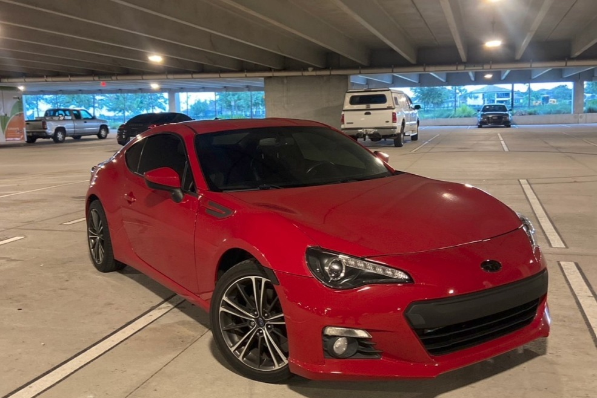
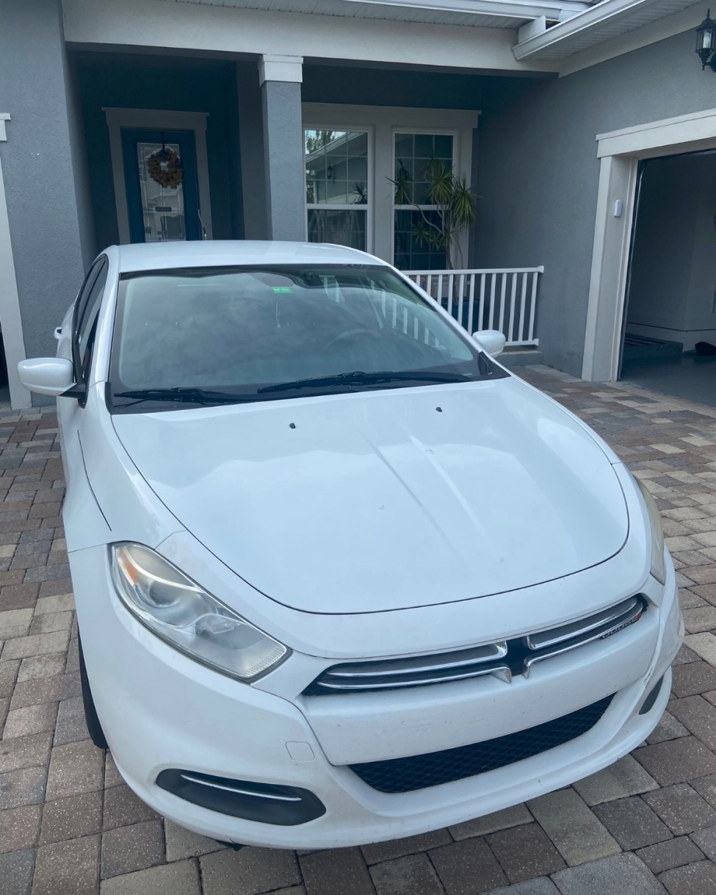
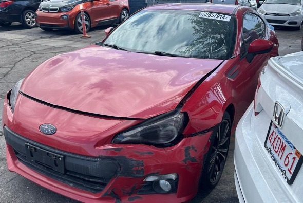
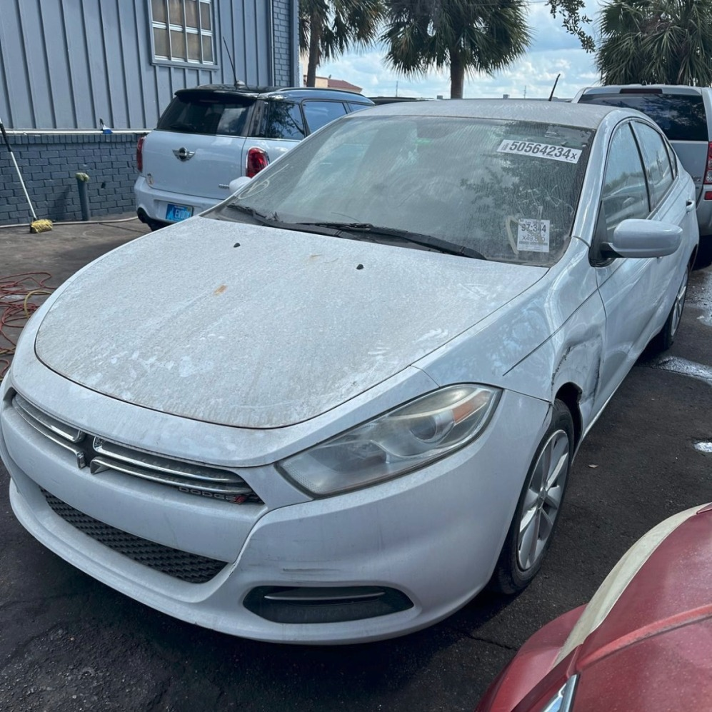

03 / AUTOMOTIVE / REPAIR & RESALE
Repairing and reselling four cars.
Two friends and I pooled our money to buy, repair, and resell cars. We worked on a Subaru BRZ, Dodge Dart, Ford Focus, and Nissan Juke, selling all four and generating $10,000 in total revenue.
- MY ROLE
- Project partner · troubleshooting, repairs & sales
- WHEN
- 2024 to 2025
- STATUS
- Four cars repaired & sold


How it started
Two friends and I decided to pool our money and start flipping cars. We bought vehicles that needed work, repaired them, and sold them, taking on both the mechanical problems and the responsibility of finding a buyer.
My role
I worked alongside my friends to troubleshoot problems, carry out repairs, and sell the cars. The work gave me practical experience with automotive mechanical systems and the process of taking a vehicle from purchase through repair to resale.
Working through setbacks
Some cars turned out to be much more problematic than we expected. We would fix one issue and discover another, which made the work frustrating and forced us to keep adjusting our approach. We kept working through those setbacks until every car was repaired and sold.
The result
We repaired and sold four cars: a Subaru BRZ, Dodge Dart, Ford Focus, and Nissan Juke. Together, the sales generated $10,000 in total revenue. The photos here document our work on the BRZ and Dart.
What I learned
I learned how to troubleshoot, understand automotive mechanical systems, and handle repairs. Just as valuable was learning to deal with unexpected problems, work through frustration, and sell what we had put our time and money into.
01 / 2014 SUBARU BRZ
Bodywork, reassembly,
and drivetrain troubleshooting.
Work included body repair, component replacement, cleaning, paint preparation, and reassembly. Manual transmission shifting and suspected synchronizer related issues were investigated with experienced mechanic support.

02 / 2013 DODGE DART
From non running
to drivable.
The team purchased the Dart for $500 through a dealership auction connection. Work centered on transmission and shift linkage troubleshooting, component repair or replacement, and exterior restoration.

Keep exploring my work.
Explore all projects